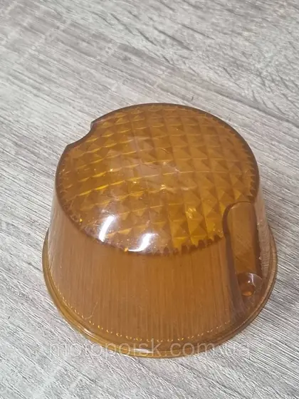
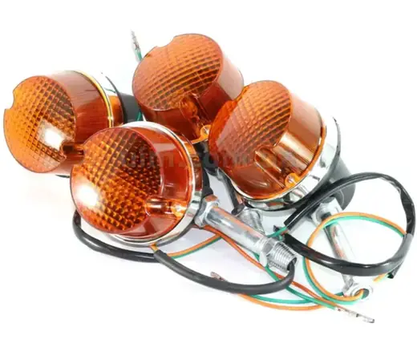
Повороти й стоп-сигнали
Введіть назву чи артикул.
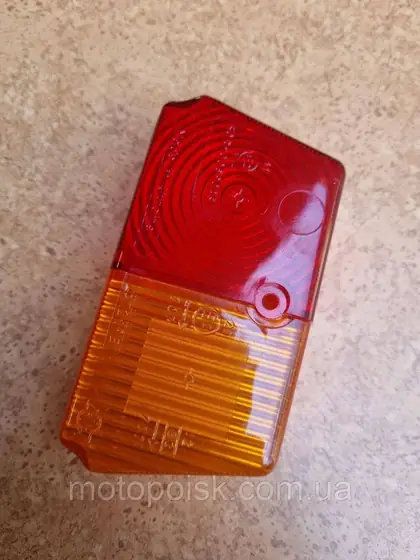
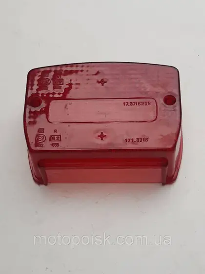
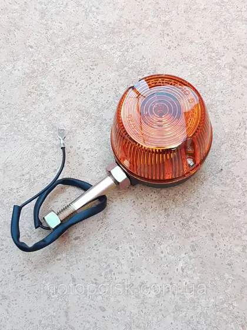
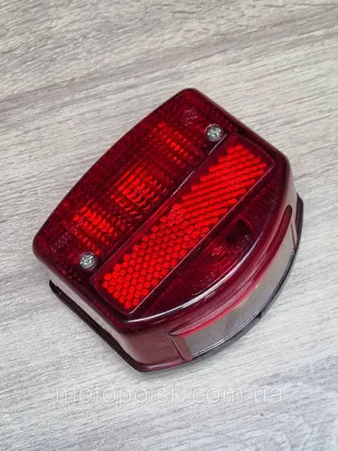
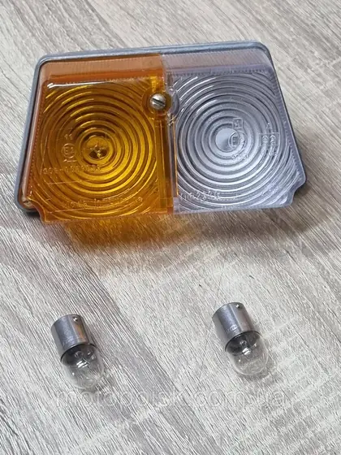
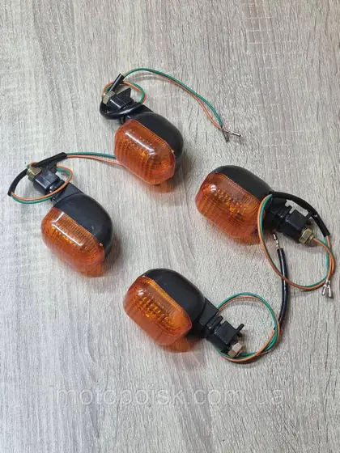
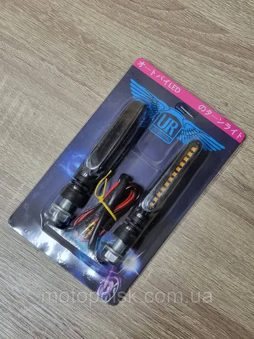
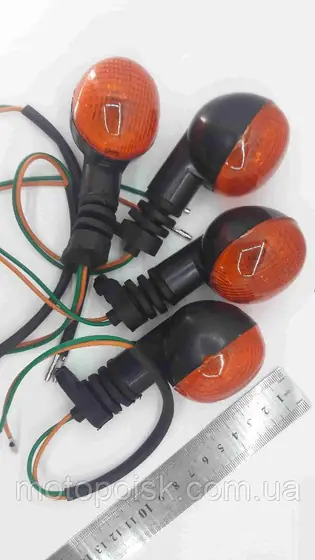
AC0091
Повороти Дельта Альфа овальні "крапелька" 4 шт. на гнучкій ніжці в комплекті з лампочками
В наявності435 ₴/комплект
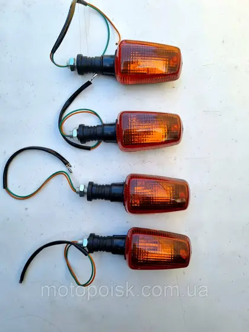
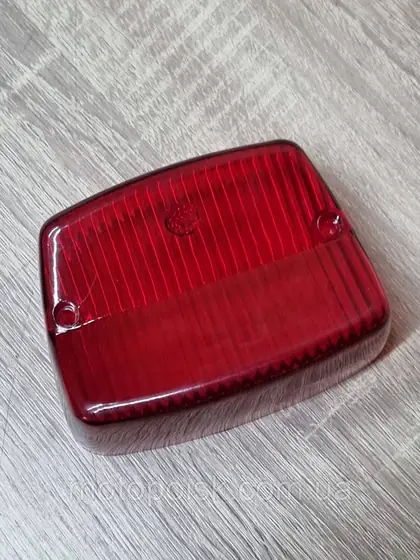
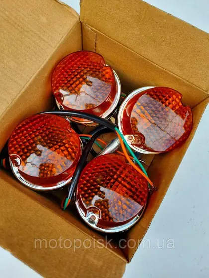
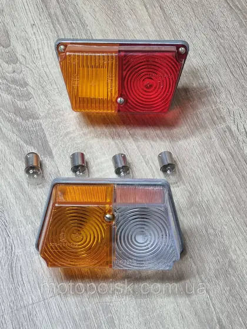
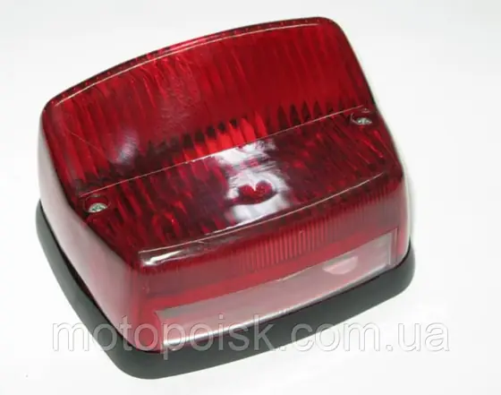
Нічого не знайшли у прев'ю. Зніміть фільтр або зателефонуйте: +380 (68) 316-07-03.